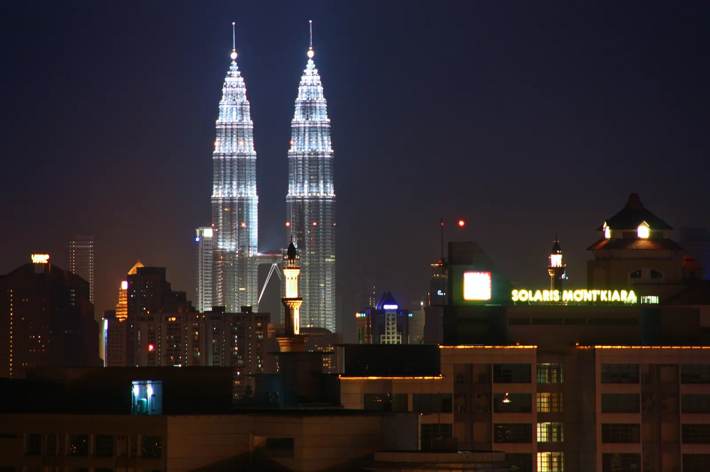
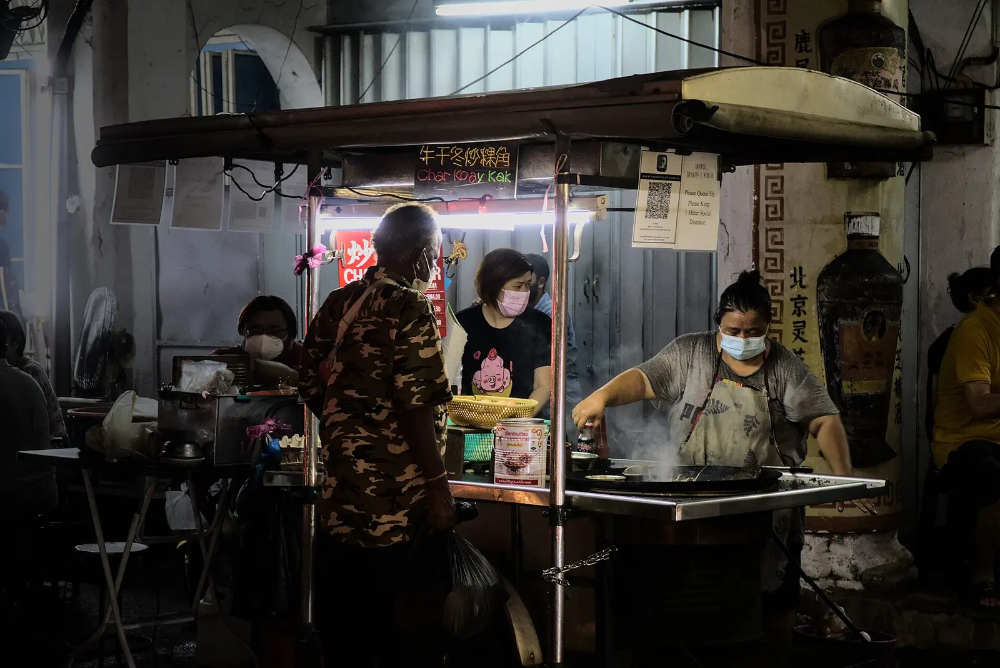
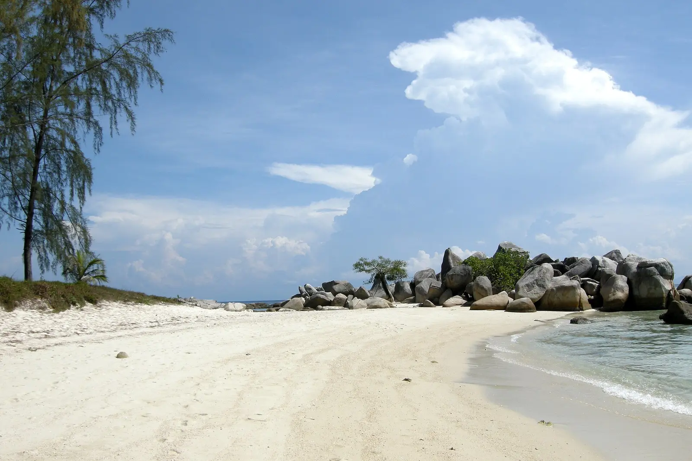
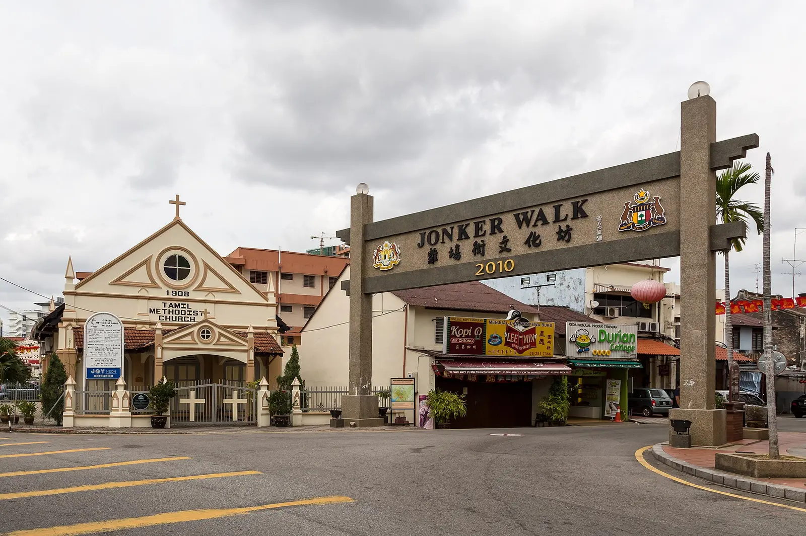
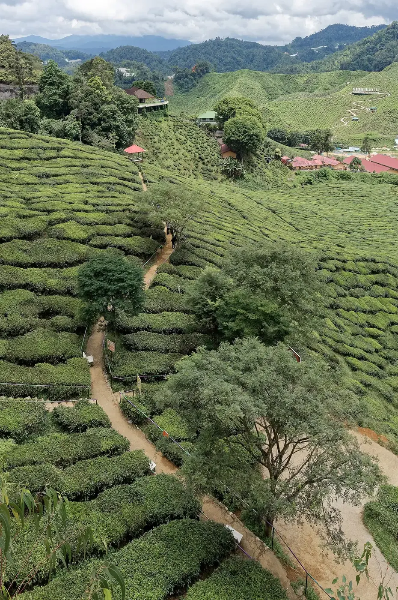
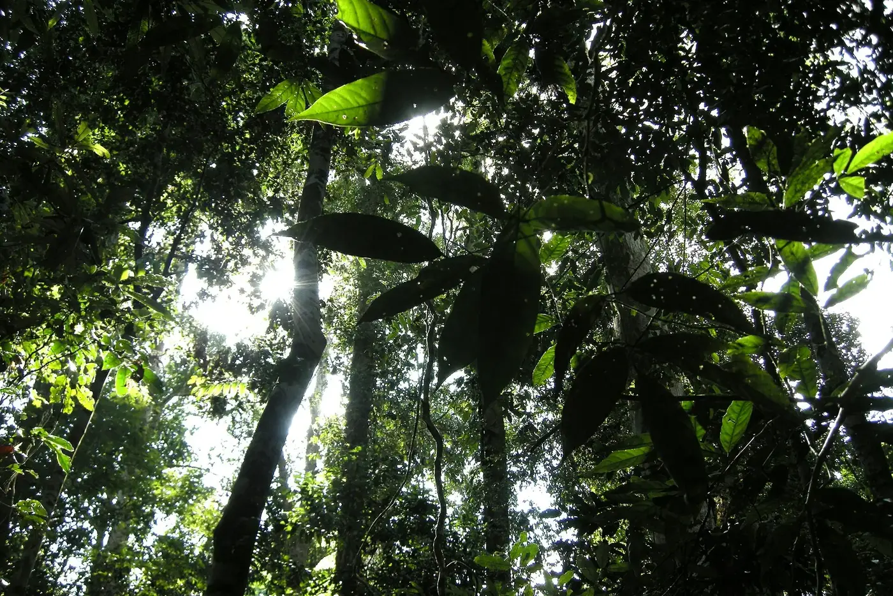
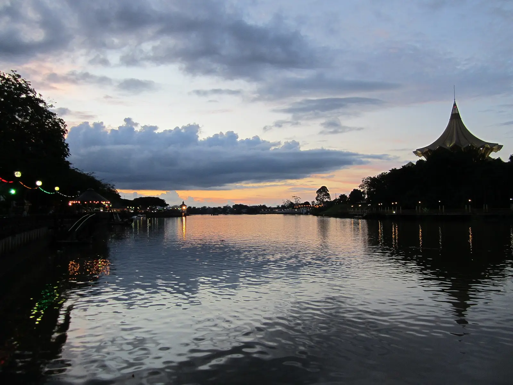

A monsoon-aware route through peninsular Malaysia and Borneo for a first-timer couple — why to go, when to go, how the bases connect, and what 2–3 weeks costs in euros.
Malaysia packs what its neighbours offer separately into one country. George Town is routinely called Asia's greatest street-food city[1]; Borneo delivers wild orangutans at Sepilok and Semenggoh[2]; Taman Negara is a ~130-million-year-old rainforest, older than the Amazon[3]; and Malacca and George Town form a joint UNESCO World Heritage Site of lived-in multicultural heritage[4].
For a first-timer it is unusually frictionless. Malaysia ranks #1 in Asia for English proficiency[5], and EU passports get 90 days visa-free on a free online MDAC filed within three days of arrival[6]. The catch is not bureaucracy — it is the weather, and the weather is what writes the route.
One constraint orders everything: the split monsoon. The season decision is the routing decision. The Northeast monsoon (≈Nov–Mar) shuts most Perhentian resorts and boats and roughens east-Sabah seas[7][8], while Sarawak around Kuching is wettest Nov–Feb[9]. The west coast runs on the opposite rhythm — so a single trip can't catch every region at its theoretical best.
Go late March–May — the one stretch where the east-coast islands have reopened and Borneo has dried out, before the June–October haze.

Arrive into KLIA — cheapest, best-connected, the natural head of the route. ETS train and buses link the short scenic hops; the Penang–Langkawi passenger ferry is suspended, so fly that one[11].

The cross-peninsula jump to the Perhentians is a flight. This is the leg the monsoon closes — viable only inside the late-March–May window, dropped entirely Nov–Feb.
≈ 20 nights as the default — a 13-night cut and a 27-night long version both work. Hop-by-hop spine in Getting between the bases; nightly splits in the routed itinerary.




Five reasons it's the most rewarding first step into Southeast Asia — best street food on the continent, wild orangutans, the oldest rainforest, living UNESCO cities.
Fly into KLIA — cheapest, best-connected, the natural start of a West-Coast route. Belgians get 90 days visa-free but must file the free MDAC within 3 days.
Fly the long and awkward hops; take the train and bus for the short scenic west-coast ones. Every Borneo hop and the jump to the Perhentians is a flight.
Late March–May is the one window where the east-coast islands and Borneo are both open and dry while the haze hasn't yet arrived; June–July is the runner-up.
Money, SIM, health, etiquette, safety and per-couple budget for a Belgian couple's first 2–3 week trip — including the eastern-Sabah security note.
One sensible order: a west-coast sweep, an east-coast wild leg, then Borneo — with a recommended nights-split, 12–14 day and 3-week+ variants, and the monsoon reroute.